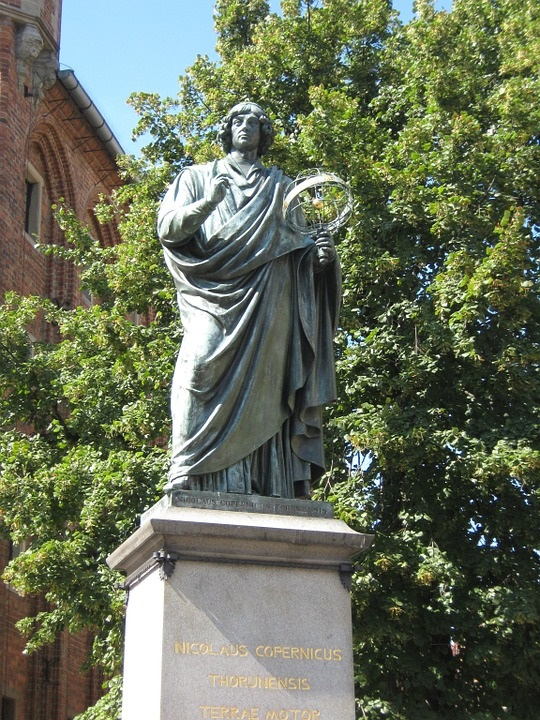

Mikołaj Kopernik

Portret z Sali Mieszczańskiej w Ratuszu Staromiejskim w Toruniu

Pomnik Mikołaja Kopernika. Olsztyn, stolica województwa Warmińsko-Mazurskiego
Mikołaj Kopernik urodził się 19 lutego 1473 roku w Toruniu, zmarł przed 21 maja 1543 roku we Fromborku. Był polskim astronomem oraz autorem dzieła "O obrotach sfer niebieskich", która szczegółowo przedstawiała heliocentryczną wizję wszechświata. Mówią, że teoria heliocentryzmu pojawiła się na długo przed przyjściem Mikołaja Kopernika na świat, w starożytnej Grecji. Pomimo tego to jednak jego dzieło wywołało prawdziwy przełom i była to jedna z największych rewolucji naukowych od czasów starożytnych. Był nie tylko wybitnym astronomem ale również lekarzem oraz tłumaczem. Odnajdywał się również w takich dziedzinach jak ekonomia, matematyka, prawo, astrologia czy chociażby strategia wojskowa. Lecz to właśnie astronomia była jego specjalnością.
Heliocentryzm:
Heliocentryzm (gr. ἡλιος helios – słońce, κέντρον kentron – centrum) – teoria budowy Układu Słonecznego, według której w wersji historycznej Słońce znajduje się w środku Wszechświata, zaś w jego współczesnym wydaniu w centrum Układu Słonecznego jest Słońce, a wszystkie planety, łącznie z Ziemią, je obiegają.Symulacja teorii Heliocentrycznej
Edukacja:
W latach od 1491 do 1495 podejmował on naukę na Akademii Krakowskiej, która w tamtych czasach była uważana za jeden z najlepszych ośrodków kształcenia w dziedzinie astronomii. Po ukończeniu nauki na Akademii Krakowskiej, w 1496 roku rozpoczął studia na Uniwersytecie Bolońskim z zakresu prawa. W roku 1501 kształcił się w dziedzinie medycyny na uniwersytecie w Padwie. Kilka lat później uzyskał on tytuł doktora w zakresie prawa kanonicznego.